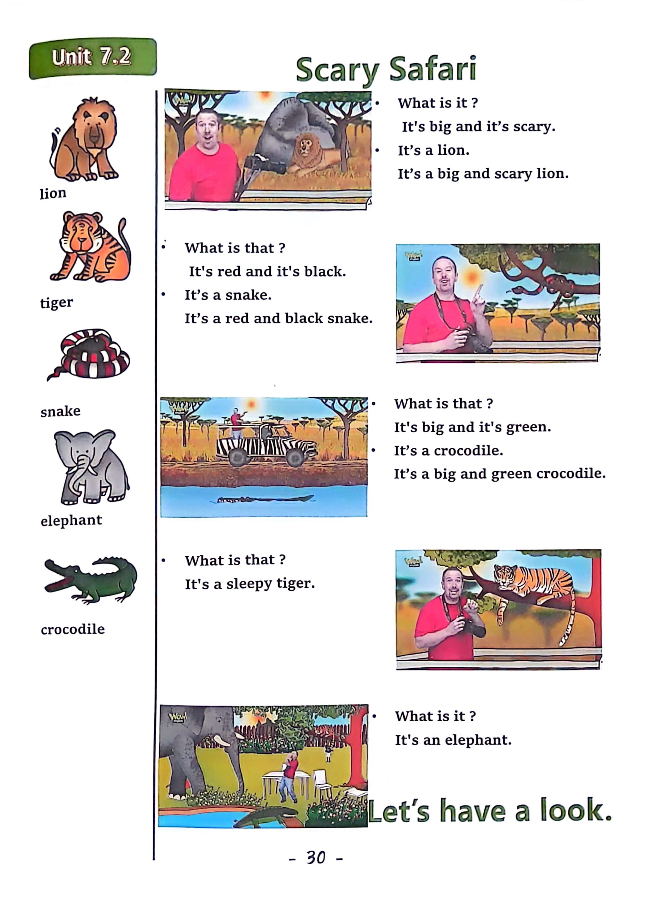

Day 30
Unit 9 · story
教材重点
教材重点依据网盘文件“第四级绿色每日打卡全.pdf”，PDF 第 32 页对应 Day 30；以原图为准，避免对图片文字做不可靠的自动识别。
网盘教材重点原图 · PDF 第 32 页对应 Day 30

Unit 9 · story · 6–7岁
red · green · blue · look
Hello, hello, my name's Steve.
台词本为机器转写，可能存在识别误差；不等同于视频逐字原声。
详细内容
Part 1 核心词汇
必须掌握 · 4 个Part 2 跟读句型与句型拓展
左侧保留台词本原句，右侧为替换练习；拓展内容不是视频逐字台词。
Hello, hello, my name's Steve.
It's time to play. It's time to play in English.
And pants. Maggie.
Here's a photo of me playing football, I like playing football. I do, hey, hello, hi.
We're looking at some of my family photos from my holiday. Hey, look, here's the next photo.
Part 3 台词本全文
来源：第4级台词本 · 030.Wow!Green - Unit 9 story2.pdf。以下保留网盘 PDF 的机器转写文本，仅清理了文件路径页眉和空行。
Hello, hello, my name's Steve.
It's time to play. It's time to play in English.
Sandals, swimsuit, sunglasses,
Cup.
And pants. Maggie.
Here's a photo of me playing football, I like playing football. I do, hey, hello, hi.
We're looking at some of my family photos from my holiday. Hey, look, here's the next photo.
Look, we're on a boat, hey Steve, who's that who? Maggie, he's wearing a white cap.
The white cap.
Oh yeah, that's my cousin Peter. He's wearing a white cap.
Hey, what's he wearing He's wearing a white cap, a white cap, a white cap. What is he wearing He's
wearing.
A white cap, a white cap, a white cap, okay?
Next photo.
We're swimming, hey,
Who's that? Oh, maggie, she's wearing a red swimsuit, the red swimsuit, who's wearing a red swimsuit?
Oh yeah, it's my cousin Sarah, my cousin is wearing a red swimsuit.
What's she wearing?
She's wearing a red swimsuit, a red swimsuit, a red swimsuit.
Say with me, what's she wearing She's wearing a red swimsuit, a red swimsuit, a red swimsuits. Yeah.
OK, next picture.
Oh, look.
Ice cream, yummy, yummy, steve, who's that homaggie He's wearing green sandals, wearing green
sandals.
Oh yeah.
It's my uncle, my uncle John is wearing green sandals, so hey what's he wearing?
He's wearing green sandals, green sandals, green sandals.
What is he wearing is wearing green sandals, green sandals, green sandals,
I love ice cream, delicious,
Oh look, maggie, we're at the park. Wow.
But who's that girl Hoo, maggie, she's wearing black sunglasses.
/
-
/4/030.Wow!Green - Unit 9 story2.txt[2022/3/29
星期二
6:49:32]
Wearing black sunglasses. Oh yeah.
That's my sister, my sister Anne, look, she's wearing.
Black sunglasses, say it with me, what's she wearing She's wearing black sunglasses, black sunglasses.
Black sunglasses, what she wearing She's wearing black sunglasses, black sunglasses.
Black sunglasses. Great.
Next picture.
No, dear, we don't need to see the no box, they've got back, no, maggie, yeah.
I want to say, okay,
Oh dear, who's that?
I don't know, but look, look, he's wearing.
Blue pants say with me, what's he wearing He's wearing blue pants, blue pants, blue pants.
What's he wearing is wearing blue pants, blue pants, blue pants.
Oh, that's a bit of a silly picture, isn't it? Oh, I think it's Steve. Let's find out.
Let's move on.
Oh, oh dear.
I see your hands, no, no, it's not me, it's not me. No. Look, look.
My pants are dark, blue, not like blue. It's you, oh yeah, you're right,
It is me. HA, ha, HA, my pants are see next time, boys and girls.
Steve's pets are blue.